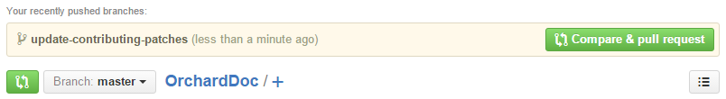
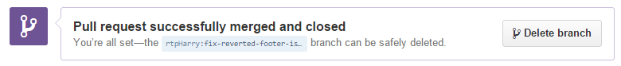

贡献补丁-Contributing Patches
Orchard CMS uses GitHub for its source code management and issue tracking. You can find the main Orchard CMS repository at:
Orchard CMS使用GitHub进行源代码管理和问题跟踪。您可以在以下位置找到主要的Orchard CMS存储库：
-
[https://github.com/OrchardCMS/Orchard](https://github.com/OrchardCMS/Orchard）
We welcome community contributions but please read these guidelines before you start work.
我们欢迎社区的贡献，但请在开始工作之前阅读这些指南。
First step - open an issue or discuss an existing one
第一步 - 打开问题或讨论现有问题
If you're new to contributing then you should discuss your plans before you start work. This is especially true if it involves building new features or changing the architecture.
如果您不熟悉，那么您应该在开始工作之前讨论您的计划。如果它涉及构建新功能或更改架构，则尤其如此。
Don't know where to start? There are lots of existing bugs which have been reported in the issue tracker.
不知道从哪里开始？问题跟踪器中已经报告了许多现有错误。
All of Orchard's planning is done in the GitHub repo's issue tracker.
Orchard的所有计划都是在GitHub repo的[问题跟踪器]（https://github.com/OrchardCMS/Orchard/issues）中完成的。
If your idea / bug isn't in the issue tracker (don't forget to check the closed issues as well - it might have been fixed in a development branch) then open a new issue to start a discussion with the community.
如果您的想法/错误不在问题跟踪器中（不要忘记检查已关闭的问题 - 它可能已在开发分支中修复），然后打开一个新问题以开始与社区讨论。
Branches
分行
The repository is split into two main development branches, 1.9.x and dev. There is also a master branch which represents the latest released stable version of the software. While other features are being worked on you might find some additional branches temporarily created but they are just to test out ideas and they will get merged back into one of the main branches later on.
存储库分为两个主要的开发分支，1.9.x和dev。还有一个master分支，代表最新发布的软件稳定版本。虽然正在处理其他功能，但您可能会发现临时创建了一些其他分支，但它们只是为了测试想法，稍后它们将合并回一个主要分支。
All the active feature work is being done by the core team in the 1.9.x branch. Whenever a new release is ready, changes get merged from 1.9.x to master. Master is a stable branch and is normally always in a "green" state.
所有活动的功能工作都由1.9.x分支的核心团队完成。每当新版本准备就绪时，更改就会从1.9.x合并到master。 Master是一个稳定的分支，通常总是处于“绿色”状态。
The 1.9.x branch is the short-cycle dev branch. This is where features and bug fixes are being worked on for the next point release (for example, the difference between v1.9.1 and v1.9.2).
1.9.x分支是短周期dev分支。这是针对下一个版本发布的功能和错误修复的地方（例如，v1.9.1和v1.9.2之间的区别）。
The dev branch is the long-cycle dev branch. This is where bigger features are being worked on that won't make it into the next version of Orchard CMS.
dev分支是长循环开发分支。这是正在开发的更大功能的地方，不会进入下一版本的Orchard CMS。
There is also a separate repository called Orchard2 which is the implementation of Orchard CMS in Asp.Net Core (also known as DNX).
还有一个名为[Orchard2]（https://github.com/OrchardCMS/Orchard2）的独立存储库，它是Asp.Net Core（也称为DNX）中Orchard CMS的实现。
Milestones and labels
里程碑和标签
New issues are opened all the time. After an issue is submitted the core team members will review it. When it's acccepted as a valid task to complete it will be given a milestone and perhaps some labels. The milestone indicates which branch any pull requests for the issue should be sent to.
新问题一直在打开。提交问题后，核心团队成员将对其进行审核。当它被认为是完成它的有效任务时，它将被赋予里程碑，也许还有一些标签。里程碑表示应该将针对该问题的任何拉取请求发送到哪个分支。
You might also see some additional tags like a severity level or further categorization. These labels can help you prioritise which issues you should give your attention first based on their urgency or your speciality as a developer.
您可能还会看到一些其他标记，例如严重性级别或进一步的分类。这些标签可以帮助您根据他们的紧迫性或您作为开发人员的专长，首先确定应首先注意哪些问题。
In the screenshot above you can see that the bug has been tagged with the labels bug, high and Layouts. This means it has been confirmed as a bug, it is a high priority fix and it is part of the Orchard.Layouts module. Below that you can see the milestone icon with the word dev next to it. This means that if you do work on it you should work from the dev branch.
在上面的屏幕截图中，您可以看到错误已被标记为“bug”，“high”和“Layouts”。这意味着它已被确认为错误，它是一个高优先级修复程序，它是Orchard.Layouts模块的一部分。在下面你可以看到里程碑图标，旁边有“dev”字样。这意味着如果你做它，你应该从dev分支工作。
How to fork and work with the repository
如何分叉和使用存储库
The easiest way to get started with GitHub is to use Github Desktop. This software has a built-in tutorial which will teach you the basics when you first install it.
开始使用GitHub的最简单方法是使用[Github Desktop]（https://desktop.github.com/）。该软件有一个内置教程，可以在您第一次安装时教您基本知识。
You can also create a fork via the GitHub website. GitHub have provided a guide explaining how to fork a repo.
您还可以通过GitHub网站创建一个分支。 GitHub提供了一个解释[如何分发回购]的指南（https://help.github.com/articles/fork-a-repo/）。
GitHub is powered by Git. If you're an advanced user with experience of using Git on the command line then you can interact with GitHub hosted repositories as you normally would. If you're interested in learning then GitHub have their own interactive code school and the entire Pro Git book is available has also been made available by it's authors and is endorsed by the official Git website.
GitHub由[Git]（http://git-scm.com/）提供支持。如果您是具有在命令行上使用Git经验的高级用户，那么您可以像往常一样与GitHub托管的存储库进行交互。如果您对学习感兴趣，那么GitHub有自己的[交互式代码学校]（https://try.github.io/），并且整个[Pro Git书籍都可用]（http://git-scm.com/ book / en / v2）也由其作者提供，并得到Git官方网站的认可。
Working on an issue
处理一个问题
By now you should have agreed with the community which issue you're working on, you should know which branch you're targeting and you should have created your own fork.
到目前为止，您应该同意社区中您正在处理的问题，您应该知道您所针对的是哪个分支，并且您应该创建自己的分支。
When working on an issue you should create a branch in your local clone per-issue. This branch isolates your changes from the master branch. You can merge this new branch back in to the main codebase later on with a pull request.
处理问题时，您应该在每个问题的本地克隆中创建一个分支。该分支将您的更改与master分支隔离开来。您可以稍后使用拉取请求将此新分支合并到主代码库中。
Please work on only one issue per branch / pull request.
每个分支/拉取请求只能处理一个问题。
Please follow the code conventions document when writing new code for Orchard.
在为Orchard编写新代码时，请遵循[代码约定文档]（/ Documentation / Code-conventions）。
Once you've made your changes you need to publish your local commits back to the remote fork in your GitHub account. The basic Git concept behind this process is to commit your local changes and then push the branch to your remote copy on GitHub.
完成更改后，您需要将本地提交发布回GitHub帐户中的远程分支。这个过程背后的基本Git概念是“提交”你的本地更改，然后将分支“推”到GitHub上的远程副本。
This can be done in many ways:
这可以通过多种方式完成：
-
[使用GitHub桌面]（https://help.github.com/desktop/guides/contributing/committing-and-reviewing-changes-to-your-project/）
-
From within Microsoft WebMatrix 3
-
从Microsoft WebMatrix 3中
-
From within Microsoft Visual Studio
-
从Microsoft Visual Studio中
-
Using Git Extensions
-
使用Git扩展
-
Using Git on the command line
-
在命令行上使用Git
If you're just starting out with Git then you should use GitHub Desktop to make this process simple for yourself.
如果你刚刚开始使用Git，那么你应该使用GitHub Desktop让这个过程变得简单。
Once this is done, your changes are on GitHub, but not yet in the project's official repository. To get it there, you'll need to ask us to pull the changes in. In order to do that, send us a pull request.
完成此操作后，您的更改将在GitHub上进行，但尚未在项目的官方存储库中进行。为了实现这一目标，您需要让我们提取更改。为了做到这一点，请向我们发送拉取请求。
Submitting a pull request
提交拉取请求
When you have finished your work on the issue you can create a pull request. A pull request opens a dialog with the community to review your work and provide feedback.
完成该问题的工作后，您可以创建拉取请求。拉取请求会打开与社区的对话框，以审核您的工作并提供反馈。
Creating a pull request is best done from within the GitHub.com website. You can create pull requests using other techniques but using the GitHub.com has a clear interface so that you can make sure you are creating a pull request with the correct branch and you can have one final check of the files before you initiate it.
创建拉取请求最好在GitHub.com网站内完成。您可以使用其他技术创建拉取请求，但使用GitHub.com有一个清晰的界面，以便您可以确保使用正确的分支创建拉取请求，并且可以在启动之前对文件进行最后一次检查。
Navigate to your forked copy of the OrchardDocs repo. Its url will be https://github.com/{YourUserName}/OrchardDoc
导航到OrchardDocs repo的分叉副本。它的URL将是“https://github.com/ {YourUserName} / OrchardDoc`
You should see a create pull request bar along the top of your repos page:
您应该在回购页面顶部看到一个创建拉取请求栏：

This is a shortcut that GitHub have implemented to help you quickly create a pull request from your most recent push. If this isn't the branch you want to create the pull request you want by following these steps:
这是GitHub实现的快捷方式，可帮助您从最近的“推送”中快速创建拉取请求。如果这不是您要通过以下步骤创建所需的拉取请求的分支：
- Visit your fork of OrchardDocs in your GitHub account (don't forget, it can be found at
https://github.com/{YourUserName}/OrchardDoc)
1.访问您的GitHub帐户中的OrchardDocs分支（请不要忘记，可以在http://psithub.com/ {YourUserName} / OrchardDoc`找到它）
- Click
Pull Requestsfrom down the right hand side of the site
1.单击站点右侧的“拉取请求”

- Click the
New pull requestbutton in the top right:
1.单击右上角的“新拉请求”按钮：

- You will be taken to the Comparing changes screen. In the main box it will probably say there isn't anything to compare:
1.您将进入比较更改屏幕。在主框中，它可能会说没有可比较的东西：

The `base fork` is the place you are sending the changes to (the official Orchard repository). The `head fork` is your fork with the new files.
- Next to the
head forkselect the drop down box that starts with the labelcompare:
1.在head fork旁边，选择以标题compare：开头的下拉框

- Select the branch you want to merge:
1.选择要合并的分支：

In this screenshot the `upgrade-contributing-patches` branch is being selected.
- The page will refresh and you will see all the files that are going to be updated by your pull request:
1.页面将刷新，您将看到由pull请求更新的所有文件：

Review the files that are going to be changed. This is your last chance to double check everything is correct. Check that you haven't included any passwords or other sensitive data (If you have you will need to change the passwords as they are already public on your GitHub account).
When you're happy with the pull request click the green `Create pull request` button near the top of the Comparing changes page.
- On this final screen you can give your pull request a title and a description:
1.在最后一个屏幕上，您可以为您的拉取请求提供标题和说明：

You should make your description as detailed as possible. You can use markdown to add headings and other formatting. You can also copy/paste screenshots into the description and it will automatically upload and insert them for you.
**IMPORTANT** GitHub supports automatically closing issues via pull requests. If you are working on issue #1234 then be sure to add the phrase `fixes #1234` somewhere in your description. When the pull request is accepted it will automatically close the corresponding issue. You can actually use [several different keywords](https://help.github.com/articles/closing-issues-via-commit-messages/) depending on whichever you prefer to achieve this same effect.
- The final step is to click the
Create pull requestbelow your description.
1.最后一步是单击描述下方的“创建拉取请求”。
Your pull request has now been created and will be reviewed by the community and the core team.
您的拉取请求现已创建，并将由社区和核心团队进行审核。
Don't forget! Your pull request is a living thing. If you make more commits to your branch and push them to your GitHub account they will be automatically included in the pull request.
别忘了！你的拉动请求是生物。如果您向分支机构提交更多提交并将其推送到您的GitHub帐户，它们将自动包含在提取请求中。
This is useful if somebody gives you feedback suggesting changes but it also means that you shouldn't delete the branch until after the pull request has been accepted or declined.
如果有人向您提供建议更改的反馈，这也很有用，但这也意味着您不应该在拉取请求被接受或拒绝之后删除分支。
You will get a notification when there is any activity on your pull request. When you are on GitHub.com you will see your notification icon light up with a little blue dot:
当您的拉取请求有任何活动时，您会收到通知。当你在GitHub.com上时，你会看到你的通知图标点亮了一个蓝点：
Unless you have turned email notifications off, you will also receive an email from GitHub.
除非您关闭了电子邮件通知，否则您还会收到来自GitHub的电子邮件。
You can check on your pull request at any time by navigating to it through one of several ways in GitHub:
您可以通过GitHub中的几种方式之一导航到它来检查您的拉取请求：
-
Click the Pull requests menu option in the top of the GitHub.com website:
-
单击GitHub.com网站顶部的Pull requests菜单选项： *

-
Navigate to the OrchardDocs repo and click Pull requests down the side menu:
-
导航到[OrchardDocs]（https://github.com/OrchardCMS/OrchardDoc）repo，然后单击侧面菜单中的Pull requests： *

Pull request review process
拉请求审核流程
The Orchard development team meets every week to review pull request and triage issues. During this meeting the team will decide if the pull request fulfills the prerequisites or comment if any improvements should be applied.
Orchard开发团队每周都会召开会议，审核拉取请求和分类问题。在此会议期间，团队将决定拉取请求是否满足先决条件或评论是否应该应用任何改进。
If an agreement is reached to accept the pull request then it will be marked as so and someone with commit rights on the main repository will accept the pull request and merge your work into the Orchard CMS repository. This process might involve altering the history to remove any feedback loop changes which don't add anything to the work done.
如果达成协议以接受pull请求，那么它将被标记为如此，并且在主存储库上具有提交权限的人将接受pull请求并将您的工作合并到Orchard CMS存储库中。此过程可能涉及更改历史记录以删除任何反馈循环更改，这些更改不会对完成的工作添加任何内容。
If more work is requested you make the changes on your local branch, commit them, push the branch to your GitHub account they will be automatically included in the pull request for further review.
如果要求更多的工作，你在本地分支上进行更改，“提交”它们，“推送”分支到你的GitHub帐户，它们将自动包含在拉取请求中以供进一步审查。
What to do once your pull request has been reviewed
一旦您的请求被审核，该怎么办
Once your contribution has been accepted and integrated into the official Orchard CMS repository you can now delete the branch. GitHub will let you know when this is safe to do. You will see a Delete branch button at the bottom of the pull request page:
一旦您的贡献被接受并集成到官方Orchard CMS存储库中，您现在可以删除该分支。 GitHub会告诉您什么时候这样做是安全的。您将在拉取请求页面的底部看到“删除分支”按钮：

If your feature was accepted please consider contributing some documentation to the OrchardDoc repo. Just as this article has helped you out today, by documenting your new feature you can help other Orchard users to get the most out of Orchard CMS. You can read more about the documentation process here.
如果您的功能被接受，请考虑为[OrchardDoc]（https://github.com/OrchardCMS/OrchardDoc）回购提供一些文档。就像本文今天帮助您一样，通过记录您的新功能，您可以帮助其他Orchard用户充分利用Orchard CMS。您可以阅读更多有关[此处的文档处理]（/ Documentation / Contributing-documentation）的信息。
The fork that you made can be re-used for as many contributions as you like. Just remember to keep making a new branch each time you start work on a new issue. There is one thing to consider though: While you've been working on this there has probably been other commits and pull requests on whichever branch you're working on. You can bring your branch back in line with the main repo by syncing your fork.
您制作的分叉可以重复使用，以获得尽可能多的贡献。只要记住每次开始处理新问题时都要继续创建新的分支。但有一点需要考虑：虽然你一直在研究这个问题，但是在你正在处理的任何一个分支上可能还有其他的提交和拉取请求。你可以通过[同步你的叉子]（https://help.github.com/articles/syncing-a-fork/）使你的分支回到主回购。
What to do if your pull request is not accepted
如果您的拉取请求未被接受该怎么办
Sometimes pull requests don't get accepted. Maybe the feature isn't classed as complete enough, maybe you have a different vision for the feature compared to the core team. Whatever the reason, if you find yourself in this position then don't worry.
有时拉取请求不会被接受。也许这个功能不够完整，也许你对核心团队的功能有不同的看法。不管是什么原因，如果你发现自己处于这个位置，那就别担心了。
Consider implementing your new idea as an Orchard Module instead. There are plenty of tutorials on this website and around the web which will teach you how to do this. With the way Orchard has been built you can extend and replace almost every part of it.
考虑将您的新想法实现为Orchard模块。这个网站和网络上有很多教程可以教你如何做到这一点。通过Orchard的构建方式，您可以扩展和替换它的几乎每个部分。
When you have extracted your code into a module you can submit it to the Orchard Gallery for other users to download and use in their sites.
将代码解压缩到模块后，可以将其提交到[Orchard Gallery]（http://gallery.orchardproject.net/），以便其他用户在其网站中下载和使用。